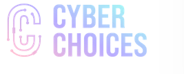

LOCKBIT
THIS ARCHIVE IS OVERSEEN AND UPDATED
BY BUGZORC UNTIL FEBRUARY 24TH 2024.
CHECK GITHUB FOR THE LATEST ARCHIVE.

Don't become and affiliate! - Cyber Choices
The Cyber Choices programme was created to help people make informed choices and to use their cyber skills in a legal way.
This is a UK national programme co-ordinated by the National Crime Agency and delivered by Cyber Choices teams within UK Regional Organised Crime Units and Local Police Force Cyber Teams.
The aims of the programme are:
Link:
Uploaded: 26 Jan, 2024 13:21 UTC
Updated: 26 Jan, 2024 13:21 UTC